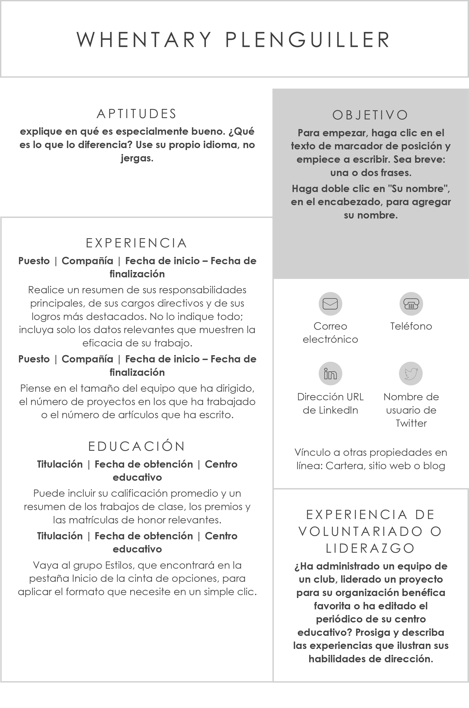

¡Hoy puede ser el día!¡en que encuentres el
trabajo que mereces!

¿Y tu curriculum?
En esta sección encontrarás un resumen detallado de mi trayectoria profesional y académica.
Cada etapa refleja no solo el conocimiento
adquirido, sino también el compromiso, la responsabilidad y la pasión que pongo en cada
proyecto en el que participo. 🎓💼
✅ Contratar a alguien con experiencia y habilidades demostrables.
✅ Encontrar un perfil adaptable y comprometido con el trabajo en equipo.
✅ Identificar a un profesional con capacidad para resolver problemas de forma eficiente.
INTERESADO POR LA EMPRESA
FinSoluBank
🏢 Nombre de la Empresa:
FinSoluBank S.A. de C.V.
📍 Ubicación:
Ciudad de México, CDMX (modalidad híbrida)
🌐 Sitio web:
www.finsolubank.com
✉️ Correo de contacto:
contacto@finsolubank.com
🧾 Descripción de la Empresa:
FinSoluBank es una entidad financiera con más de 15 años de trayectoria, especializada
en
ofrecer soluciones de ahorro, crédito e inversión tanto para personas como para pequeñas
y
medianas empresas. Su enfoque está orientado a impulsar el desarrollo económico
responsable,
combinando tecnología financiera con atención personalizada. El ambiente de trabajo es
colaborativo, con oportunidades constantes de crecimiento y capacitación.
💼 Vacante Disponible:
Puesto: Analista Financiero Jr.
📃 Descripción del Puesto:
Estamos en busca de un Analista Financiero Jr. para integrarse a nuestro equipo de
planeación y control. La persona ideal será responsable de apoyar en la elaboración de
presupuestos, análisis de rentabilidad, reportes financieros y proyecciones mensuales.
Buscamos a alguien con capacidad crítica, alto sentido de responsabilidad y muchas ganas
de
crecer profesionalmente.
✅ Requisitos:
Licenciatura en Finanzas, Contaduría, Economía o afín.
Experiencia mínima de 1 año en análisis financiero o prácticas profesionales.
Conocimiento de Excel (tablas dinámicas, fórmulas, gráficos).
Deseable manejo de herramientas como SAP, Power BI o sistemas ERP.
Trabajo en equipo, enfoque en resultados y buena comunicación.
💰 Salario Ofrecido:
$15,000 – $18,000 MXN mensuales, según perfil.
📆 Jornada y Modalidad:
Tiempo completo.
Modalidad híbrida: 3 días presencial, 2 días remoto.
LAS EMPRESAS CON MAS VACANTES
Segunramente ya no encuentras trabajo, escoge a las empresas con mas vacantes
RECOMANDECIONES DE USO DE LA APP
Siempre es de cometer errores, por que si no hubiera errores, tu IQ is GOD
🔎 Explora y postula con estrategia
Revisa diariamente las vacantes nuevas para no perder oportunidades.
Filtra empresas con más vacantes para tener más chances de ser contratado.
Explora empresas por sectores y guarda tus favoritas.
Activa las notificaciones para recibir alertas de empleo al instante.
Postula rápido a las vacantes activas, ¡el tiempo es clave!
Usa palabras clave precisas al buscar empleos para mejores resultados.
👤 Optimiza tu perfil
Completa tu perfil al 100% para destacar entre otros candidatos.
Agrega una foto profesional que transmita confianza.
Incluye logros concretos en tus experiencias laborales.
Actualiza tu perfil cada semana, incluso si no has cambiado de empleo.
Muestra tus habilidades con claridad (tecnológicas, blandas, idiomas, etc.).
Agrega enlaces a tu portafolio, CV online o LinkedIn.
📄 Mejora tu currículum desde el sitio
Utiliza nuestras herramientas para crear o actualizar tu CV.
Guarda varios currículums adaptados a diferentes áreas.
Revisa tu ortografía y gramática cuidadosamente.
Resalta tus logros con datos medibles (ej. “Aumenté ventas un 20%”).
Incluye cursos, voluntariados y proyectos personales relevantes.
💼 Prepárate para postular y vender tus servicios
Revisa descripciones de vacantes con atención.
Personaliza tu currículum para cada vacante que apliques.
Practica tus entrevistas con nuestras plantillas y simuladores (si los tienes).
Prepara propuestas para vender tus servicios desde la sección de trabajos.
Agrega precios claros si ofreces trabajos o freelancing.
Utiliza testimonios o casos previos para ganar confianza de empleadores.
🏢 Conoce las empresas antes de aplicar
Revisa el perfil de la empresa antes de postularte.
Lee opiniones de otros usuarios si están disponibles.
Investiga la misión, cultura y valores para ver si se alinean contigo.
Guarda las empresas que te interesan para aplicar cuando haya vacantes.
📈 Haz seguimiento de tu crecimiento
Monitorea el estado de tus postulaciones desde tu perfil.
Evalúa en qué tipo de empleos tienes más éxito.
Actualiza tus habilidades según las vacantes más demandadas.
Solicita retroalimentación si no fuiste seleccionado.
🧠 Consejos extra para destacar
Sé constante: aplicar a muchos empleos aumenta tus chances.
Adapta tu CV a cada país o región si aplicas internacionalmente.
Invierte tiempo en aprender nuevas habilidades (tecnológicas, idiomas, etc.).
Redacta mensajes personalizados al enviar tu aplicación.
Muestra actitud positiva en tu perfil, incluso en tiempos difíciles.
🔐 Seguridad y confianza
Nunca pagues por postular a una vacante.
Verifica siempre que los empleadores sean legítimos.
Reporta cualquier comportamiento sospechoso en la plataforma.
💬 Aprovecha la comunidad
Participa en foros o chats si están disponibles.
Sigue a empresas o usuarios que te inspiren.
Comparte tips o recursos si puedes ayudar a otros.
🛠️ Explora más funciones de la plataforma
Usa el buscador avanzado para vacantes específicas.
Guarda tus búsquedas frecuentes para ahorrar tiempo.
Explora cursos y contenidos que te ayuden a mejorar tu empleabilidad.
Utiliza nuestras herramientas para comparar ofertas o empresas.
Agrega una carta de presentación directamente desde tu perfil.
🧭 Motivación final
No te desanimes si no obtienes respuesta inmediata.
Recuerda: encontrar trabajo es un trabajo. ¡Sé constante!
Cree en tu valor. Tu momento llegará si te preparas y eres activo.